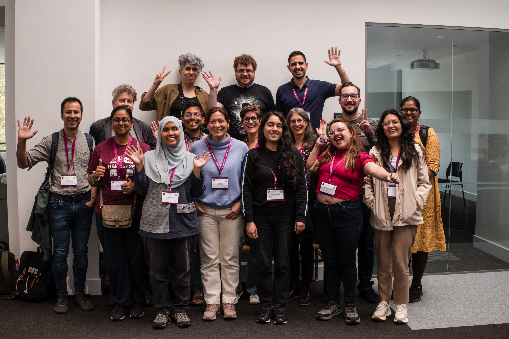

RSECon25: Mi primera experiencia en la conferencia de Research Software Engineering
¿Qué es RSE?
Research Software Engineering (RSE) es una disciplina que combina la experiencia profesional en ingeniería de software con un profundo conocimiento de la investigación científica. Los RSEs son aquellos profesionales que desarrollan y mantienen el software que hace posible la investigación moderna en todas las disciplinas.

Mi experiencia en la RSECon25
Del 9 al 11 de septiembre de 2025, tuve la oportunidad de participar en la RSECon25, la novena conferencia anual de la Society of Research Software Engineering, celebrada en la University of Warwick, Coventry, Reino Unido.
- Aproximadamente 434 participantes entre asistentes presenciales y asistentes de forma remota
- 60 charlas, talleres y sesiones BoF (Birds of a Feather)
- 23 pósters presentados
- Múltiples eventos sociales y de networking
Temas principales
La conferencia giró en torno a dos temas complementarios:
RSE and Research Excellence: Cómo el trabajo de los RSEs permite la excelencia en la investigación mediante expertise técnica y buenas prácticas de codificación.
RSE as Digital Research Infrastructure (DRI): Reconociendo a los RSEs como infraestructura digital humana esencial para la investigación moderna.
Highlights de la conferencia
🎤 Keynote destacada
Amanda Brock, CEO de OpenUK, abrió la conferencia con una charla sobre el papel del software open source en la investigación y la importancia de comunidades como la RSE.
🤖 Retrieval Augmented Generation (RAG)
Una de las charlas que más llamó mi atención fue sobre RAG en investigación. Con el auge de los LLMs, aprender cómo implementar sistemas RAG de manera efectiva para mejorar la precisión y confiabilidad de las respuestas generadas por IA en contextos de investigación fue invaluable. Se discutieron casos de uso prácticos, desde asistentes de documentación hasta sistemas de búsqueda en literatura científica.
👥 The Research Software Analyst Role
Este rol emergente combina análisis funcional, desarrollo de software y comprensión del dominio científico. La charla exploró:
- Habilidades clave necesarias
- Trayectorias profesionales
- Casos de éxito en diferentes instituciones
Y me dió una nueva perspectiva sobre la evolución de nuestra profesión y las oportunidades de especialización.
🌈 Workshop: Improving Diversity in RSE
El workshop “Improving Diversity in RSE” fue uno de los más impactantes. Trabajamos en: - Identificar barreras sistémicas en la comunidad RSE - Estrategias concretas para crear ambientes más inclusivos - Construir mentorías efectivas para grupos subrepresentados
Las discusiones fueron honestas y constructivas, con compromisos tangibles para mejorar la diversidad en nuestros equipos.
🌱 Green RSE Award
Por primera vez se otorgó el Green RSE Award, patrocinado por el Software Sustainability Institute, reconociendo contribuciones a la sostenibilidad ambiental en software de investigación. Un recordatorio importante de que debemos considerar el impacto ambiental de nuestro código.
🤝 Networking y comunidad
Lo más valioso fue conectar con RSEs de todo el mundo: - Compartir desafíos comunes independientemente del campo de investigación - Aprender nuevas herramientas y metodologías - Establecer colaboraciones futuras
Próxima edición: RSECon26 en Sheffield
RSECon26 se celebrará del 9 al 11 de septiembre de 2026 en la University of Sheffield.
Será la décima conferencia presencial de la sociedad, así que esperan celebraciones especiales.
¿Por qué participar en la comunidad RSE?
Después de mi experiencia, estas son mis razones para involucrarse:
- Reconocimiento profesional: La conferencia valida el trabajo crucial que hacen los RSEs
- Desarrollo de habilidades: Acceso a talleres y charlas de vanguardia
- Comunidad global: Red de apoyo con profesionales de distintas regiones geográficas enfrentando desafíos similares
Recursos para comenzar
Si te interesa la comunidad RSE:
- 🌐 Web oficial: society-rse.org
- 📅 International RSE Day: 9 de octubre de cada año
- 🌍 Grupos regionales: Desde principios de año se inaguró uno en Chile y próximamente se abrirá uno en Argentina.
Para Latinoamérica
Aunque la conferencia está principalmente centrada en UK, hay interés creciente en establecer comunidades RSE en Latinoamérica. Si te interesa:
- Únete al Slack de la Society of RSE, hay un grupo para personas hispanohablantes que trabajan como RSE
- Participa remotamente en próximas conferencias
Reflexión final
RSECon25 me mostró que existe una comunidad vibrante y acogedora lista para compartir conocimiento y experiencias.
Ya sea que te identifiques como RSE, seas un investigador que programa, o un ingeniero de software trabajando en investigación, esta comunidad tiene algo valioso que ofrecerte.
Si tienes la oportunidad de asistir a la RSECon26 en Sheffield, ¡no lo dudes!
¿Ocupas este rol en tu equipo de trabajo? ¿Te interesa el software de investigación? Me encantaría conocer tu experiencia. ¡Conectemos: mandame un correo o un mensaje por LinkedIn!